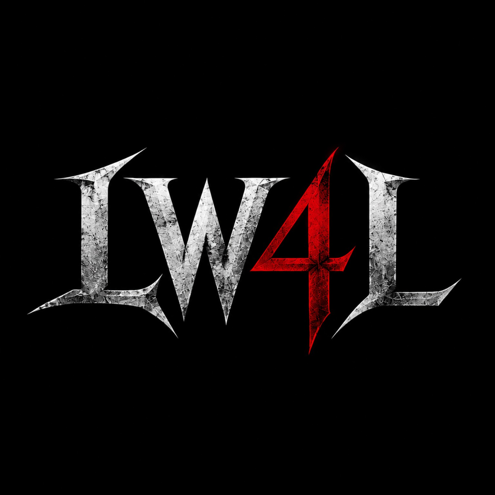

THINK FREELY.
Question the expected. Choose with intention.

THE INDEPENDENT MOVEMENT CONNECTTHE CODE IS INDEPENDENCE 001 / LW4L
Not everyone is meant to follow the crowd. LW4L is a movement for those building a life on their own terms.
01 / THE MOVEMENT
A DIFFERENT WAY TO MOVEBeing a lone wolf isn't about shutting the world out. It's about knowing who you are, making your own decisions, and refusing to let the crowd choose your direction.
We believe in discipline without performance. Confidence without noise. Connection without losing yourself.
Question the expected. Choose with intention.
Let the work speak louder than the announcement.
Own your direction, even when it's yours alone.
02 / THE DISCIPLINE
A LW4L CONCEPT
Less noise. More intention. Ghost Mode is the LW4L approach to focused personal growth: choose a direction, commit to the process, and build without needing an audience.
EXPLORE THE PROTOCOL03 / THE PROTOCOL
START WHERE YOU AREPick one meaningful area of your life to improve. Make the goal yours.
Take small, repeatable actions. Focus on what you can control.
Review your progress. Adjust the plan. Keep your identity bigger than any setback.
Ghost Mode challenges and member features are part of the long-term vision. This version of the website is an introduction to the movement, not an active tracking platform.
04 / THE VISION
LW4L is growing into a creative and self-development movement — a space for ideas, skills, culture, and people who value independence.
Our future may include apparel, resources, and deeper community experiences. We're building with intention, one step at a time.
FOLLOW THE JOURNEY05 / STAY CONNECTED
No sign-up required. Find LW4L on the platforms where the movement is taking shape.